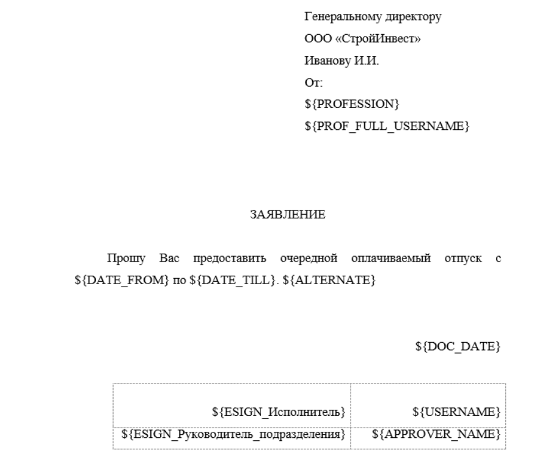

Шаблон документа – заготовка файла документа, состоящая из статической и динамической частей. Статическая часть остаётся неизменной во всех файлах, созданных на основании одного шаблона. Динамическая часть содержит переменные, которые в момент генерации файла заменяются на определённые значения, например дата документа, фамилия, должность сотрудника.
Использование шаблонов документов позволяет привести документы одного типа к единому виду, а при настроенной автогенерации избавляют от необходимости подготавливать файлы документов вручную. С помощью шаблонов удобно создавать такие типовые документы, как счёт, счёт-фактура, накладная, заявление на отпуск, приказ о предоставлении отпуска и другие.
Шаблоны документов. Правила
▪Шаблон документа может создать любой пользователь системы, подключить шаблон к определённому виду документов и добавить шаблон в процесс может только администратор в Консоли администрирования.
▪В системе шаблон документа – это обычный электронный документ, карточка шаблона документа не отличается от карточек других электронных документов. Как правило, все шаблоны документов хранятся в одной папке (например, Документы/Templates).
▪В качестве шаблона допустимы файлы следующих форматов: .docx, .xlsx, .pdf. PDF-файл может использоваться в качестве шаблона только для постановки на нём штампа электронной подписи.
▪Переменные, используемы в шаблоне, должны быть записаны в формате "${VARIABLE_NAME}", где VARIABLE_NAME – уникальное имя переменной. Для именования переменных рекомендуем использовать латинские символы, исключение – якорь ${ESIGN_Роль_ЭП}, где "Роль_ЭП" – идентификатор якоря в редакторе процесса.
▪Значения переменных формируются из атрибутов электронного документа или контекстных переменных процесса.
▪При использовании шаблона документа в каком-либо процессе у пользователя должно быть право доступа как минимум "Просмотр" (Browse) к документу-шаблону.
Как создать шаблон документа
1.На компьютере подготовьте файл, который будет использоваться в качестве шаблона.
 Пример шаблона документа |
2.Создайте документ необходимого вида и в карточке этого документа прикрепите файл, который в дальнейшем планируете использовать в качестве шаблона.
Загруженный шаблон документа можно использовать в процессах, также пользователь может скачать шаблон документа на компьютер, заполнить по своему усмотрению и прикрепить к карточке другого документа.
Как узнать, есть ли шаблон документа для определённого вида документа
При создании документа пользователь первым делом выбирает вид документа. Если для документа выбранного вида администратор установил шаблон, то на втором этапе, в окне Создание документа, пользователю будет доступна ссылка Скачать шаблон документа.
Скачать шаблон документа